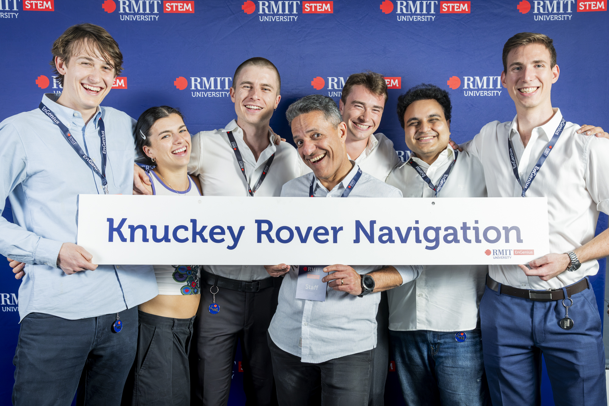
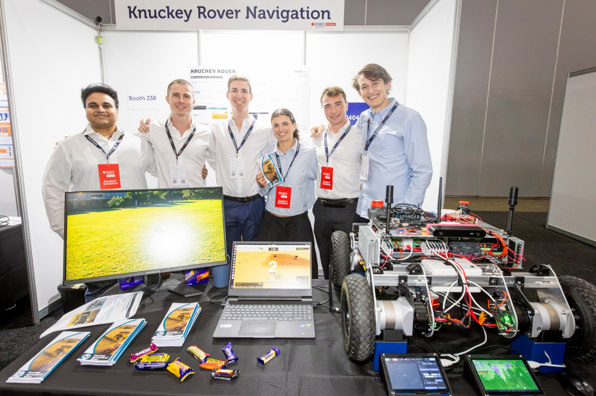
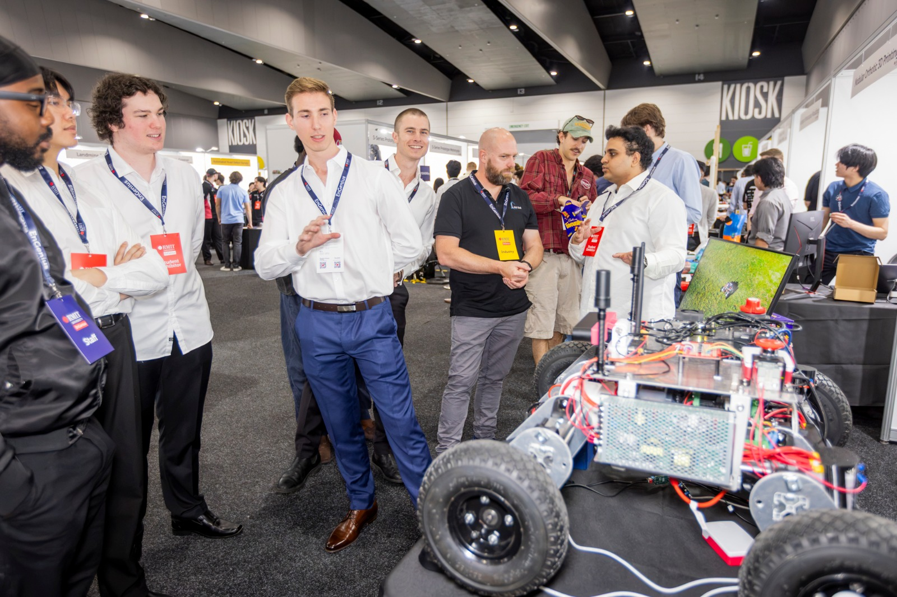
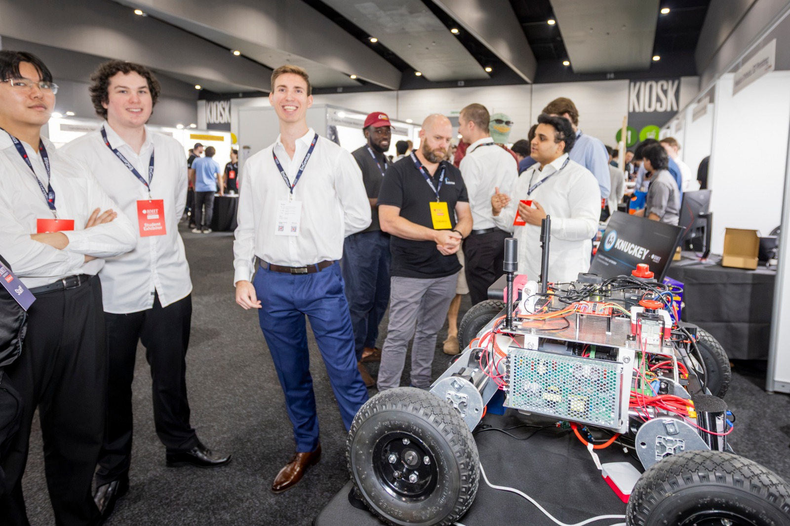
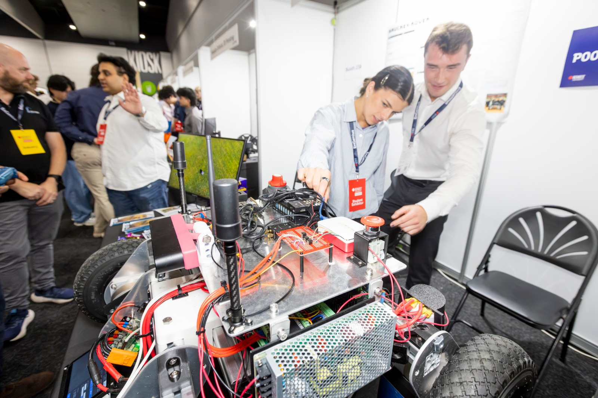
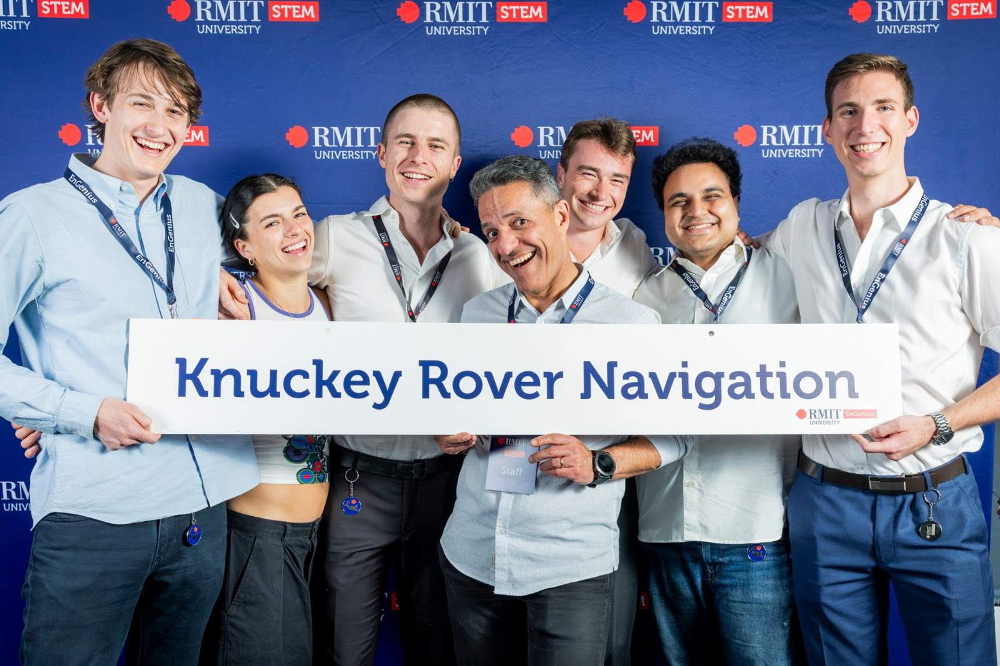
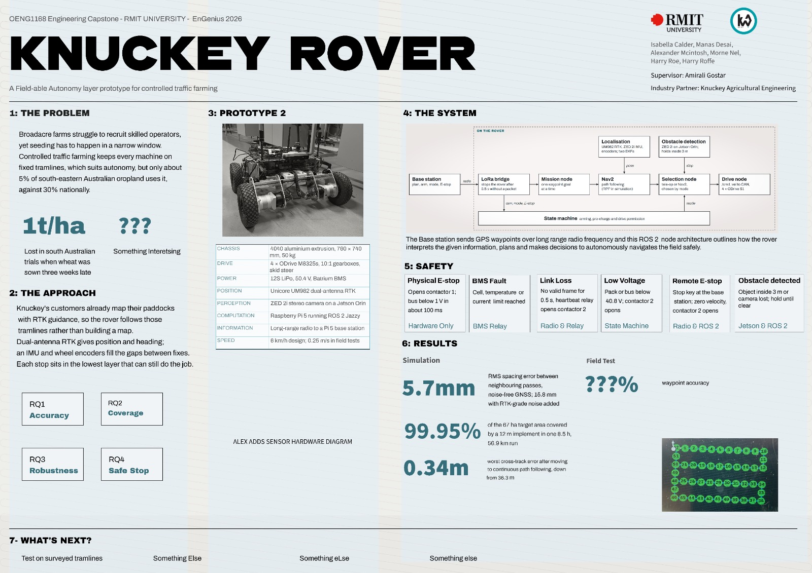

Knuckey Autonomous Rover
ROS 2 · Gazebo · Isaac Sim · Nav2 · Sensor Fusion
Award-winning agricultural rover autonomy project. Developed and validated simulation and navigation workflows, including stereo perception and GPS/IMU/odometry fusion.
I'm Manas Desai, an RMIT engineering student working across autonomous robotics, simulation, mechanical design and prototyping.
Explore projectsGitHub repository
Award-winning agricultural rover autonomy project. Developed and validated simulation and navigation workflows, including stereo perception and GPS/IMU/odometry fusion.
Structures-team work focused on nose-cone design, engineering drawings and hands-on fabrication.
Designed gripper mechanisms and built the project simulation.
Designed the cartridge-loading mechanism from scratch during an engineering internship.
Additional project photos and videos can be added to the three other project cards when the original website media is available.
Design, integration, simulation, testing and demonstration of an agricultural autonomous rover.










ROS 2 Jazzy · Gazebo · NVIDIA Isaac Sim · Nav2 · robot_localization · GPS / IMU / odometry · Stereo vision · Python · C++ · SolidWorks · CAD · Embedded systems
Explore the code and engineering documentation on GitHub. Contact: S3964030@student.rmit.edu.au.